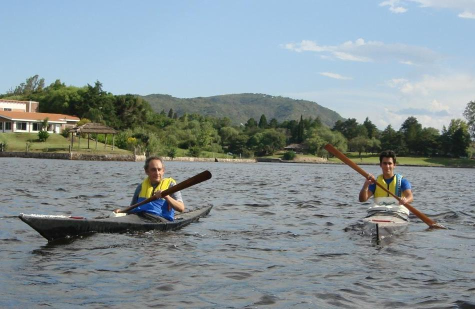

Sea Rider by Carlos and Emilio Martinez (AR)
Menu
Previous Page
Next Page

Carlos and Emilio paddle the Sea Rider's. Emilio can be seen
"Rolling"
his Sea Rider in the attached link. Use the
{Back}
key to return.